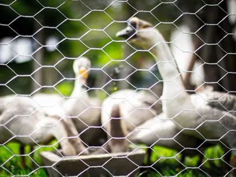

At first glance, hexagonal wire mesh might seem like one of those humble materials you barely notice — a web of interconnected wires, forming tiny hexagonal shapes. Yet, behind this everyday fabric lies a story that spans industries, geographies, and urgent humanitarian needs. It's not just about fencing your garden or keeping poultry safe; this mesh plays a pivotal role in sustainable construction, environmental protection, and even disaster relief worldwide.
Understanding hexagonal wire mesh, its properties, and its applications matters today more than ever. Industry disruptions, climate challenges, and evolving infrastructure demands mean materials that combine durability, versatility, and cost-efficiency get a second look. And this mesh, honestly, checks those boxes like few other materials do.
Why Hexagonal Wire Mesh Matters Globally
From bustling cities to remote villages, hexagonal wire mesh is quietly underpinning critical projects. According to ISO standards and global trade reports, demand for resilient metal fabric solutions grew by nearly 7% worldwide over the past five years — fueled by infrastructure modernization and expanding agriculture. But here's the kicker: this mesh answers a fundamental challenge posed by global development agendas, such as the United Nations' Sustainable Development Goals (SDGs). For example, when protecting soil from erosion or securing temporary shelters after disasters like floods or earthquakes, hexagonal wire mesh is indispensable.
Without dependable, affordable materials that can be rapidly deployed and adapted to various environments, progress in these areas stalls. This is where our star — the hexagonal wire mesh — really shines.
What Exactly Is Hexagonal Wire Mesh?
Simply put, hexagonal wire mesh is a woven metal netting made up of thin steel or galvanized wire, twisted together to create repeating hexagon-shaped openings. Think of it like chicken wire but often stronger and more durable depending on the wire gauge and coating.
While it's historically been a staple in farming and small-scale fencing, modern manufacturing techniques have expanded its usability. It protects road embankments, acts as a structural reinforcement (Gabions are a good example), and forms barriers in wildlife conservation. It's that blend of strength, flexibility, and light weight that makes it so versatile.
Core Components That Define Quality
- Durability: The mesh's resistance to corrosion—usually conferred by galvanizing or PVC coating—is vital for long-term outdoor use. In coastal regions or humid climates, untreated wire fails fast.
- Mesh Size and Wire Gauge: Hexagonal openings typically range from 0.5 to 2 inches; wire thickness affects load capacity. Intensive applications, like landslide barriers or heavy-duty cages, demand thicker gauges and tighter weaves.
- Flexibility and Handling: The twist method used in weaving ensures that the mesh can bend without breaking. This flexibility helps installation over uneven terrain or curved surfaces.
- Cost Efficiency: Compared to solid panels or concrete alternatives, hexagonal wire mesh offers a budget-friendly option that doesn't sacrifice performance.
- Environmental Compatibility: Because the mesh requires less raw material than alternative barriers, it has a smaller carbon footprint. Plus, it's often recyclable.
The secret sauce behind hexagonal wire mesh is how it blends strength, adaptability, and affordability. It's no wonder why it's a staple from farming to flood control.
Real-World Applications Around the Globe

From Europe's rocky slopes reinforced by gabion walls using hexagonal mesh, to agricultural enclosures in Sub-Saharan Africa, to temporary fencing at refugee camps in the Middle East — this product is everywhere. For example:
- Disaster Relief: Organizations like the Red Cross utilize lightweight hexagonal wire mesh gabions for retaining walls and shelter reinforcements following floods or earthquakes.
- Construction Industry: Civil engineering firms use it to stabilize loose soil on road embankments.
- Environmental Protection: In Indonesia, it helps secure mangrove reforestation projects, combining durability with minimal environmental disruption.
- Farming & Animal Husbandry: In Australia and South America, farmers rely on it to make predator-proof pens while maintaining airflow.

Many engineers report that the reliability and ease of transport of hexagonal wire mesh significantly reduce onsite delays.
Looking for high-quality hexagonal wire mesh for your next project? Contact our team for customized solutions and competitive pricing. Request a Quote